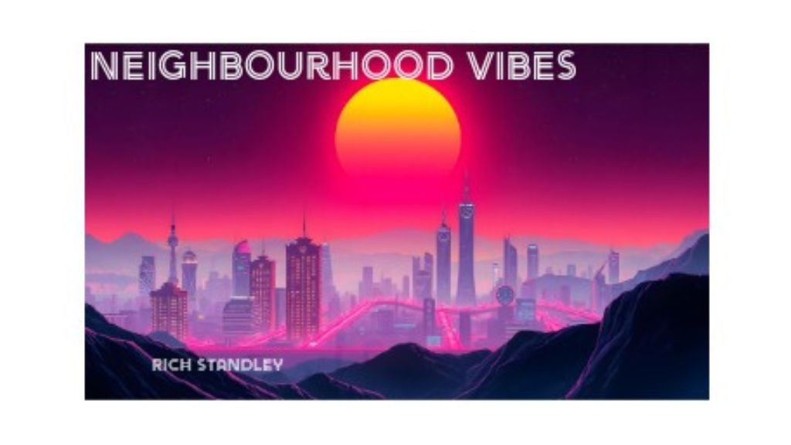

Richard Standley's 'Neighbourhood Vibes' Brings the Streets to Life

The following feature is now included in our online magazine which is also available in print.
Issue #3
Online Magazine | Print MagazineFor more details contact us at: volechomag@gmail.com
There is something filmic to a song that sounds like somewhere. Cannock music tutor Richard Standley, who devotes his weekdays to getting primary school kids to sing scales and tunes, has gone and done just this with his first single Neighbourhood Vibes. Released September 13, 2025, the song sounds like the sound of suburban streets at twilight, headlights sweeping around corners, children pedaling bicycles, the thrum of everyday life morphing into something more charged.
Standley is a familiar face on the stage—he plays weekends with a covers band—but this single marks his first excursion into original electronica. Far from being trend-driven, he resorts to instincts built up over years of listening and tutoring. His influences manifest themselves in knowing guise. There's a touch of The Prodigy in the punch and energy, an homage to The Killers in magnitude and star appeal, and a retro video game nostalgia undertone in the arpeggiated synths that evoke pixelated 80s and 90s landscapes.
The record clocks in at more than five minutes, Neighbourhood Vibes doesn't drag on. The song is presented as a night on the town that never stops changing—dancing to slick synth hooks one moment, finding oneself inexplicably stuck in some arpeggio flashback that teeters perilously on the brink of the meditative, before the beat kicks in again and the rhythm of possibility takes over. It's the kind of track that's just as good heard on headphones in isolation on a ride out as it is being blasted out of speakers before a night out with the lads.
There's also a refreshing freshness to the way Standley creates music. This is not the formulaic output of a producer searching for the formula; this is an album made in between lesson plans and Saturday afternoon broadcasts, with the same enthusiasm that goes into teaching a child their first chord. That tension between discipline and play you can hear in the music—disciplined enough to draw you in, but loose enough to breathe.
If you were to place Neighbourhood Vibes in amongst the rest, it would sit between the retro glow of Kavinsky, the melodic narration of M83, and the lead-and-centre, pulse-pounding beats of early Chemical Brothers. There's a filmic gloss that wouldn't be amis on a score—see the way electronic textures in Drive smeared neon desolation with adrenaline.
In the end, Standley built something subtly great: an album that resembles plain streets inflated to enormity. It's the park on the block, the line of houses, the small-town nightlife—all remixed and reprised on synths, beat, and imagination. With Neighbourhood Vibes, he's made a suburban English stillness a theater, and it's the sort of debut that will be remembered long after the final note is forgotten.
Follow Our Playlist For More Music!
This dispatch was last updated on September 26, 2025